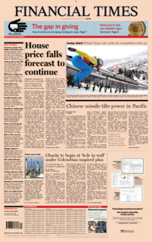

Business & Financial News, U.S & International Breaking News | Reuters
2020.10.27 09:27
X X Edition: United States
World World Home U.S. Election 2020 United States United Kingdom China India Americas Asia Pacific Europe Middle East & Africa The Great Reboot Business Business Home Sustainable Business The World at Work Legal Energy Environment Finance Media & Telecoms Healthcare & Pharmaceuticals Autos Aerospace & Defense Industrials Retail & Consumer Transport Markets Markets Home U.S. Markets European Markets Asian Markets Deals Global Market Data Stocks Bonds Funds Commodities Currencies Breakingviews Technology Investigations Lifestyle Lifestyle Home Sports Science Wealth Oddly Enough Pictures Video Graphics América Latina Canada Brasil 中国 Deutschland España France India 日本 United Kingdom United States
Business & Financial News, U.S & International Breaking News
Senate confirms Trump s Supreme Court pick Barrett
The Republican-controlled Senate handed Trump a major pre-election political victory by confirming his Supreme Court nominee Amy Coney Barrett.
Poll: Biden has solid lead in Wisconsin, narrower edge in Pennsylvania Biden to push into Georgia as Trump embarks on three-state campaign spree Stay up-to-date with the campaign here Twitter flags Trump tweet on mail-in ballotsU.S. stock market braces for rocky week ahead of contentious U.S. election
3:35am EDTPompeo says U.S., India must focus on threat posed by China
3:13am EDTBanners and prayers for Kamala Harris in her ancestral Indian village
3:47am EDTBlast at Pakistani religious school kills seven, wounds more than 80
3:39am EDTTHE WIRE
2m agoCOVID-19 crisis takes bite out of Swiss chocolate sales
8m agoHSBC to revamp business model as lower interest rates hit profit
13m agoCoronavirus pandemic deepens Japan's demographic crisis
22m agoOil advances, but outlook gloomy as coronavirus cases, supply grow
26m agoToyota-Panasonic battery JV to boost efficiency to catch up with Chinese rivals
30m agoHungarian minister says Ukraine's entry ban order is 'pathetic and nonsense'
39m agoBanners and prayers for Kamala Harris in her ancestral Indian village
48m agoBlast at Pakistani religious school kills seven, wounds more than 80
51m agoU.S. stock market braces for rocky week ahead of contentious U.S. election
53m agoHow Samsung's ownership may change as heirs take over from late Chairman Lee
59m agoU.S. State Department approves $2.4 billion more in potential arms sales to Taiwan: Pentagon
59m agoChina says will take necessary measures on U.S. arms sales to Taiwan
1h agoPompeo says U.S., India must focus on threat posed by China
1h agoVale dam-break trauma raises level of ESG funds in Brazil
2h agoChina's economic growth seen hitting 44-year low in 2020, bounce 8.4% in 2021: Reuters poll
2h agoPhilippines' Duterte orders graft probe across state agencies
2h agoGlobal foreign direct investment halved in first six months of 2020: U.N.
2h agoWave of new COVID-19 cases crashes across U.S. and Europe as winter looms
2h agoTurkish leader backs boycott of French goods over cartoon row
2h agoSaudi Arabia condemns cartoons offending Prophet Mohammad
Wave of new COVID-19 cases crashes across U.S. and Europe as winter looms
Coronavirus pandemic deepens Japan's demographic crisis
U.S. to announce plan for Medicare, Medicaid to cover early COVID-19 vaccine: Politico
Featured
Environment
Wind-driven Southern California wildfires prompt mass evacuations, injure 2 firefighters
U.S. offshore energy firms brace for Hurricane Zeta
Vietnam ready to evacuate 1.3 million from typhoon
EARNINGS
HSBC to revamp business model as lower interest rates hit profit
Novartis lifts profit outlook as hospitals cope better with COVID
BP swings back to small profit, refining weighs
Capgemini posts better-than-expected third-quarter sales growth
Japan
Tribe proudly defies tattoo taboo, hopes for Olympian boost
WORLD
Cabbies and office workers: Meet Singapore s ordinary royals
More Top News
U.S. Supreme Court will not allow extension in Wisconsin mail-in ballot deadline
Siding with Wisconsin's Republican-led legislature, the conservative-majority U.S. Supreme Court refused on Monday to allow an extension ordered by a federal judge in the deadline for returning mail-in ballots in the state, dealing a setback to Democrats.
Oct 26 2020Jared Kushner says Black Americans must 'want' to succeed
White House senior adviser Jared Kushner criticized athletes and others who have protested against U.S. racism on social media and basketball courts and suggested that Black people had to want to succeed for policies to change.
Oct 26 2020New business jet travelers help fuel order recovery during pandemic
Affluent travelers avoiding commercial flights during the pandemic are helping fuel a recovery in pre-owned corporate aircraft transactions this year and reviving shoots of demand for new planes even as the business aviation industry braces for a slump in 2020 deliveries.
1:13am EDTGlobal foreign direct investment halved in first six months of 2020: U.N.
Global foreign direct investment (FDI) plunged by 49% in the first half of 2020 from the same period a year ago and is on course to fall by up to 40% for the year, driven by fears of a deep recession, the United Nations said on Tuesday.
2:26am EDTExplainer: What to watch at the fifth plenum of China's Communist Party
Chinese President Xi Jinping and members of the Central Committee, the biggest of the ruling Communist Party's elite decision-making bodies, are meeting this week to formulate economic and social policy goals for the next five years.
2:03am EDTU.S. State Department approves $2.4 billion more in potential arms sales to Taiwan: Pentagon
The U.S. State Department has approved the potential sale of 100 Boeing-made Harpoon Coastal Defense Systems to Taiwan in a deal that has a potential value of up to $2.37 billion, the Pentagon said on Monday.
3:27am EDTReuters Pictures
Silverado wildfire forces thousands to evacuate in California
Top Photos of the Day
Advertisement
Business
COVID-19 crisis takes bite out of Swiss chocolate sales
HSBC to revamp business model as lower interest rates hit profit
How Samsung's ownership may change as heirs take over from late Chairman Lee
Markets
Oil advances, but outlook gloomy as coronavirus cases, supply grow
Vale dam-break trauma raises level of ESG funds in Brazil
China's economic growth seen hitting 44-year low in 2020, bounce 8.4% in 2021: Reuters poll
World
Hungarian minister says Ukraine's entry ban order is 'pathetic and nonsense'
China says will take necessary measures on U.S. arms sales to Taiwan
Philippines' Duterte orders graft probe across state agencies
Technology
Toyota-Panasonic battery JV to boost efficiency to catch up with Chinese rivals
China's NEV sales to account for 20% of new car sales by 2025, 50% by 2035
Ant Group to close institutional book of $17.2 billion Hong Kong IPO early: sources
Politics
Trump remakes Supreme Court as Senate confirms Amy Coney Barrett
Trump, Biden vie for votes in battleground Pennsylvania as election nears
Backers of QAnon conspiracy theory on path to U.S. Congress
Deals
UK's Genius Sports to go public in $1.5 billion deal with New York-listed SPAC
Large Southeast Asian listings have mixed debuts on outlook concerns
Las Vegas Sands mulling $6 billion sale of Vegas casinos: source
Have a news tip?
Reuters provides several ways to securely and confidentially share information and materials with our journalists.
LEARN MORE ››Signup for our newsletter
Subscribe to our daily curated newsletter to receive the latest exclusive Reuters coverage delivered to your inbox.
Invalid address Check your inbox and confirm your email address. Follow Reuters: Follow Us On Twitter Follow Us On Facebook Follow Us On Instagram Follow Us On YouTube Follow Us On LinkedIn Subscribe: Newsletters | Podcasts | Apps Reuters News Agency | Brand Attribution Guidelines | Advertise with Us | Careers | Reuters Editorial Leadership | Reuters Fact CheckReuters, the news and media division of Thomson Reuters , is the world’s largest international multimedia news provider reaching more than one billion people every day. Reuters provides trusted business, financial, national, and international news to professionals via Thomson Reuters desktops, the world's media organizations, and directly to consumers at Reuters.com and via Reuters TV. Learn more about Thomson Reuters products:
Eikon Information, analytics and exclusive news on financial markets - delivered in an intuitive desktop and mobile interface Elektron Everything you need to empower your workflow and enhance your enterprise data management World-Check Screen for heightened risk individuals and entities globally to help uncover hidden risks in business relationships and human networks Westlaw Build the strongest argument relying on authoritative content, attorney-editor expertise, and industry defining technology ONESOURCE The most comprehensive solution to manage all your complex and ever-expanding tax and compliance needs CHECKPOINT The industry leader for online information for tax, accounting and finance professionalsAll quotes delayed a minimum of 15 minutes. See here for a complete list of exchanges and delays.
Site Feedback Corrections Advertising Guidelines Cookies Terms of Use Privacy Policy Do Not Sell My Personal Information- Business News & Financial News | Reuters
- Financial News - Setting the agenda for the City
- Financial News | Stock Market and Forex News
- MSN
- Financial and Business News - Yahoo Finance
- Top 13 Best Financial Stock Market News Sources & Feeds 2020
- UK | Financial Times
- Finance News - CNBC
- Business & Financial News, U.S & International Breaking ...
- Stock Markets, Business News, Financials, Earnings - CNBC
- Business News & Financial News | Reuters
News, analysis and comment from the Financial Times, the world's leading global business publication
- Financial News - Setting the agenda for the City
Bloomberg – Best financial news sources to the Bloomberg Terminal but expensive. Bloomberg is one of the powerhouses of financial investing news services, catering primarily to Wall Street and Institutions, many of which pay a lot of money for the real-time feeds and the core market intelligence the Bloomberg Terminals bring.
- Financial News | Stock Market and Forex News
Business news & Financial news from Reuters.com. Reuters, the news and media division of Thomson Reuters, is the world’s largest international multimedia news provider reaching more than one ...
- MSN
Forbes.Com the #1 Most Popular Financial News Website . Forbes is a leading source for reliable business news and financial information. Read news, politics, economics, business & finance on Forbes.com
- Financial and Business News - Yahoo Finance
Latest investing news and finance headlines straight from Wall Street. Skip Navigation. Markets. ... Global Business and Financial News, Stock Quotes, and Market Data and Analysis.
- Top 13 Best Financial Stock Market News Sources & Feeds 2020
MSN
- UK | Financial Times
Breaking news, analysis and commentary on investment banking, fund management, hedge funds, pensions, private equity, fintech, financial regulation and trading.
- Finance News - CNBC
Financial News - Your source for news on stocks, money, politics, government and the world as it pertains to your finances and the economy.
- Business & Financial News, U.S & International Breaking ...
Latest financial, market & economic news and analysis from The Guardian
- Stock Markets, Business News, Financials, Earnings - CNBC
News, analysis and comment from the Financial Times, the worldʼs leading global business publication
News, analysis and comment from the Financial Times, the world's leading global business publication
Bloomberg – Best financial news sources to the Bloomberg Terminal but expensive. Bloomberg is one of the powerhouses of financial investing news services, catering primarily to Wall Street and Institutions, many of which pay a lot of money for the real-time feeds and the core market intelligence the Bloomberg Terminals bring.
Business news & Financial news from Reuters.com. Reuters, the news and media division of Thomson Reuters, is the world’s largest international multimedia news provider reaching more than one ...
Forbes.Com the #1 Most Popular Financial News Website . Forbes is a leading source for reliable business news and financial information. Read news, politics, economics, business & finance on Forbes.com
Latest investing news and finance headlines straight from Wall Street. Skip Navigation. Markets. ... Global Business and Financial News, Stock Quotes, and Market Data and Analysis.
MSN
Breaking news, analysis and commentary on investment banking, fund management, hedge funds, pensions, private equity, fintech, financial regulation and trading.
Financial News - Your source for news on stocks, money, politics, government and the world as it pertains to your finances and the economy.
Latest financial, market & economic news and analysis from The Guardian
News, analysis and comment from the Financial Times, the worldʼs leading global business publication
